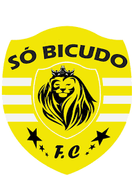
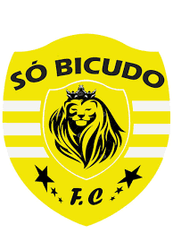

Time Da Várzea
.jpeg)
.jpeg) 

om 35 equipes, começa em Cascavel o Campeonato Municipal de Futebol Amador 2019. São 16 equipes na 1ª Divisão e 19 na 2ª Divisão.
As 16 equipes que tiveram melhor classificação no Amador 2018 automaticamente garantiram a vaga na 1ª Divisão deste ano.
A partida de abertura no Estádio Olímpico Regional Arnaldo Busatto é realizada nesta sexta-feira (4), entre Panela da Sexta x Sorec Tigrão.
Os jogos também serão disputados em outros locais como Ninho da Cobra, no Campo do Santa Cruz, no Campo do São Cristóvão, no Campo do Colonial,
no Campo das Comunidades de Rio do Salto, São Salvador e de Juvinópolis. Cada equipe recebe o jogo completo de uniforme com 22 camisetas, bermudas
e meiões. Os times da 1ª Divisão ainda ganham três bolas e as da 2ª Divisão, duas. Nesta edição a arbitragem não terá custo. Confira como ficaram as
chaves CHAVE OURO Grupo A 200 Ano F.C Sec São Cristovão Ponte Preta F.C 1. União Do Santa Cruz Grupo B Resenha Fc Panela Da Sexta Sorec Tigrão Clarito F.C /
Amigos Do Amarelo F.C Grupo C Nossa Senhora Da Salete Santa Cruz F.C Arena Cartola D´Napolli F.C Grupo D Jms. E.C Riviera F.C Operário
Atlético Clube Cascavel A.P CHAVE PRATA Grupo ACentralito F.C Itália / Belmonte Makakinhos F.C Esporte Clube Ipiranga/S. Alvorada Grupo B
Associação Esportiva Brasmadeira Brutus F.C Cetacs Liga Oeste A.J.S.H Grupo C Real / Fanáticos F.C Associação De
Juvinópolis Berserkers Estrela Azul/Fox Warriors Grupo D Tiburcius Futebol Clube Alemanha F.C Frichape Águia Futebol Clube